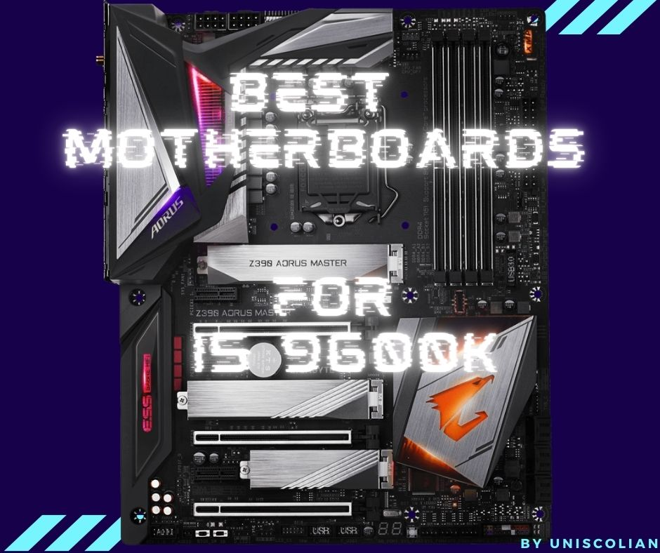
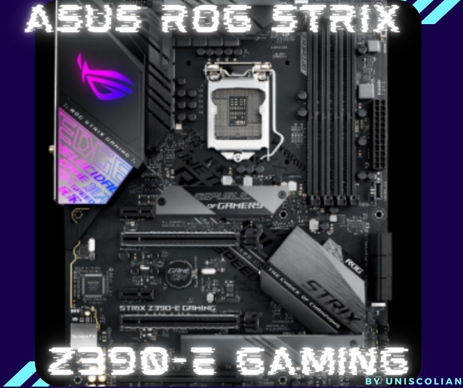
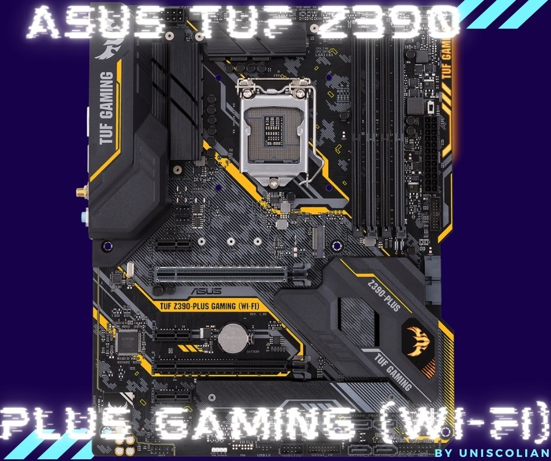
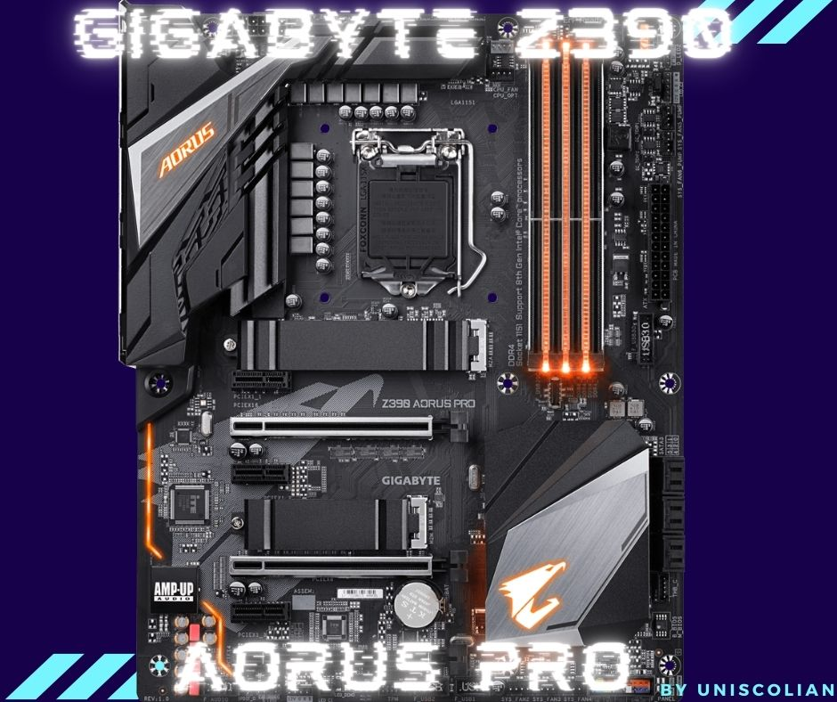
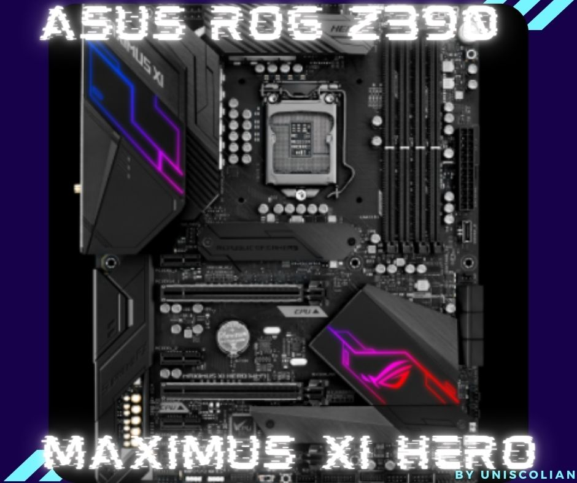
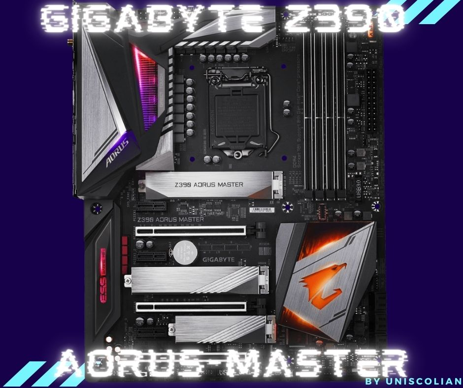

Motherboards are a very important component of gaming PCs. Having a motherboard that is capable of handling high-performance components will give you the best gaming experience possible. If you’re someone who loves gaming, then this blog post is for you! We will review some motherboards that can handle your i5 9600k and provide an excellent gaming experience.
Today gaming motherboards are available in many shapes and sizes. The best gaming motherboard for intel core i5 9600k is one that offers user reliability, compatibility with multiple graphics cards, fast USB ports, and SATA storage options.
Motherboards for gaming are often a bit more robust, and of course, have to be compatible with the Intel Core i-series CPU. That still doesn’t mean you get a pass on research, however! Remember that power sources can vary greatly depending on your needs, so if you’re looking at dual video cards or liquid cooling systems then make sure you find a board that can handle it.
Some things to consider when choosing gaming motherboards include the following:
The type of RAM slots available. Some gaming boards have more than one slot for your memory, while others only provide a single slot. You should choose a motherboard with at least two slots so you can upgrade later if you want or need to. It’ll save you money in the long run.
The GPU slots are available. Some gaming boards provide two slots, and some only have one. You should choose a gaming board with at least two PCIe lanes so you can upgrade later if necessary or desired – it’ll save you money in the long run.
Your processor’s power requirements are also something to keep in mind. The more power your gaming CPU requires, the more power you’ll need from your gaming motherboard – and that could affect how many PCIe lanes are available for GPU upgrades (or not).
Reviewers also suggest considering a board’s chipset, as some chipsets might be better suited to futureproofing than others.
The following gaming motherboards for Intel’s ninth-gen processors are all excellent choices for your i5 9600k and have a good range of features:
Asus ROG Strix Z390-E Gaming

The Asus ROG Strix Z390-E Gaming is a gaming motherboard for i5 9600k that has an elegant and sleek design. It features the latest Intel Core processors with integrated graphics to give you high gaming performance in most games, especially when paired with higher-end video cards (such as NVIDIA® GeForce RTX™). The ASUS Aura Sync RGB lighting on this gaming i5 9600k motherboard will match nicely with gaming peripherals and other gaming products to give you the best gaming experience.
The Asus ROG Strix Z390-E Gaming features an integrated solution for gaming, which means that it is capable of handling both gaming graphics as well as audio output without requiring a dedicated sound card or video card from third-party manufacturers (such as ASUS). This gaming motherboard also features a Maximus II digital power design to maximize the gaming experience by giving you more control over overclocking and allowing for a higher clock frequency, which is nice if you want to take your gaming performance up a notch or two!
In order to keep this i5 9600k gaming motherboard running at its best, ASUS included a gaming utility that lets you monitor your system’s performance and plan for future upgrades.
Memory: The gaming board has four DIMM slots that can accept up to 128GB of DDR memories. The gaming board features DDR4 memory so it is compatible with Intel Core i5 9600k.
Slots: There are three PCIe x 16 slots on the gaming motherboard, two x16 or dual x 8 and 1 max x4, which can be used for gaming cards or other hardware that you need to install in your PC. There are also three PCIe x1 slots available. Onboard Graphics: The gaming motherboard has an HDMI port that supports up to 4096×23040 resolution. DisplayPort and DVI-D ports are also available for gaming monitors.
Multi GPU: This i5 9600k gaming board features NVIDIA® SLI™ Technology, AMD CrossFireX™ Technology, so you can install dual gaming graphics cards for gaming performance.
Storage: The gaming motherboard features two M.2 slots which you can use to install storage devices like an SSD, HDD, or NAS drive if desired.
Memory: This gaming board supports up to 128GB of DDR-4 memory in four DIMM slots over the course of gaming.
Intel® InTru™ Technology: This gaming board supports Intel’s powerful Quick Sync Video, ClearVideo HD technology, and Insider for high-quality gaming videos.
Onboard Graphics: With HDMI and DisplayPort output, the gaming motherboard can be connected to a gaming display for high-quality gaming video.
This i5 9600k gaming board is designed with gamers in mind. The Intel® InTru™ Technology support enables you to produce quality gaming videos. The gaming motherboard offers HDMI and DisplayPort output to connect with gaming displays, providing gamers with the best gaming experience.
| Pros | Cons |
| Great cooling with its six fan headers and two large fans pre-installed, which means you’ll be able to keep cool while gaming on this system without any problems whatsoever. | This board also has no legacy connections which means it’s not compatible with any older system needs unless they have an adapter available. |
| The very fast and efficient performance means you’ll be able to get the most out of your games with zero lag time in between frames and no stuttering. | Does not come with an I/O shield, so you’ll need to purchase one separately if desired |
| You can also use gaming software to set up your own custom profile for the perfect gaming experience. | |
| This i5 9600k motherboard also comes with a suite of gaming utilities that make gaming more fun and easy to use. |
Conclusion: The Asus ROG Strix Z390-E Gaming motherboard is a great gaming board for i5 9600k users and also for those who want to get into gaming but don’t have the funds available for more expensive boards. It comes with a gaming-themed design which is not something you can find on regular boards, and it also has fantastic features for gaming such as the ability to support up to 128GB of RAM.
Related Article: Best Motherboard for i5 8400
ASUS TUF Z390-Plus Gaming (Wi-Fi)

ASUS TUF Z390-Plus Gaming (Wi-Fi) is a gaming motherboard that offers great features with the power of Intel. The first thing you’ll notice about this gaming motherboard from ASUS is its aesthetics, which exemplify durability and quality. The i5 9600k gaming motherboard features an all-metal ATX frame that’s durable and has LED lighting. Military-grade TUF components are used to protect gaming hardware from damage and offer gaming performance that’s stable.
ASUS TUF Z390-Plus Gaming (Wi-Fi) gaming motherboard with Intel Core i219V featuring Turbo LAN. This i5 9600k gaming motherboard from ASUS has a lot of features that will make your gaming experience more enjoyable. One such feature is the I219V which lets you get better connectivity and download speeds, so even if you are gaming with another player, you will be able to do so without the connection dropping out. The ASUS TUF Z390-Plus Gaming (Wi-Fi) gaming motherboard also has a good number of SATA ports for your storage needs. There is plenty of space on this device and it can easily support up to 128GB DDR RAM – which is more than what most gaming rigs need.
While gaming, it is very important to have a high-quality gaming device. This gaming i5 9600k motherboard delivers great quality when gaming with its HDMI and DisplayPort outputs that let you game on bigger screens or projectors without any problems. You can also connect different devices like the keyboard and mouse wirelessly using Bluetooth while your computer’s CPU doesn’t suffer from the lag that traditional gaming devices may produce.
This gaming motherboard also has a really nice audio chip, the Realtek ALC S1200A which gives you good sound quality and lots of different channels for your gaming needs. The TUF Z390-Plus Gaming (Wi-Fi) includes an Intel® Audio Boost technology to enhance gaming audio with reduced distortion, richer tones, and more gaming-specific sound effects. The LAN port on this device is very fast and so are its USB ports. It would be advisable to try out this gaming motherboard if you are gaming at home or in the office.
Description of ASUS TUF Z390-Plus Gaming (Wi-Fi) gaming motherboard is as follows:
Memory: The board features four slots for dual-channel DDR4 memory. The maximum supported capacity is 128GB.
Slots: ASUS TUF gaming motherboard features two PCIe x 16 slots and Four PCIe x 1 slots. The first is an x16 slot and the second one is an x16 slot that runs at maximum speed if only single card graphic configurations are used. If dual graphics cards are in use, then the second PCIe slot will operate as an x16/x4 slot.
Onboard Graphics: The motherboard features an HDMI port with a maximum resolution of 4096 x 230x@30Hz and a DisplayPort connector that is capable of displaying at up to 4096 x 2304260 Hz. Both connectors can handle Full HD 1080p gaming without any problems.
Multi GPU: ASUS TUF Z390-Plus Gaming motherboard supports AMD CrossFireX™ Technology.
Storage: ASUS TUF gaming motherboard features 2 x M.2 slot and six SATA ports that can be used with either SSDs or HDDs.
Audio: The Realtek® ALC S1200A audio codec provides high quality 112dB SNR stereo playback, with a 113 dB signal to noise ratio (SNR) for the front line in/out microphone thanks to an optimized EMI filter that reduces interference from electromagnetic signals – this is crucial when you want to have a gaming headset with microphone and you don’t want to hear all the ambient noise.
| Pros | Cons |
| Great cooling with its six fan headers and two large fans pre-installed, which means you’ll be able to keep cool while gaming on this system without any problems whatsoever. | This board also has no legacy connections which means it’s not compatible with any older system needs unless they have an adapter available. |
| The very fast and efficient performance means you’ll be able to get the most out of your games with zero lag time in between frames and no stuttering. | Does not come with an I/O shield, so you’ll need to purchase one separately if desired |
| You can also use gaming software to set up your own custom profile for the perfect gaming experience. | |
| This i5 9600k motherboard also comes with a suite of gaming utilities that make gaming more fun and easy to use. |
Related Article: Best Motherboard For i5 6500
Gigabyte Z390 Aorus Pro

Gigabyte Z390 Aorus Pro is a very fast motherboard. The Gigabyte Z390 Aorus PRO features plenty of overclocking options and has some great design touches to make it stand out from the crowd, but the lack of WiFi might be an issue for i5 9600k gamers who are looking for their next upgrade.
The first thing you notice about this motherboard is the design. Gigabyte has taken their distinctive Aorus branding and put it on a black PCB which results in some really striking designs, with RGB lighting everywhere you can think of.
Onboard audio isn’t as good as I had hoped for but does come with an optical S/PDIF port so external sound cards are still an option.
The onboard graphics are good enough for most things without needing to use a dedicated card, and the multiple USB connections mean that you’ll never need a second port again!
There is plenty of room in this i5 9600k motherboard with six SATA ports as well as two M.2 slots that will fit high-performance SSDs or even a RAID set-up.
Description of Gigabyte Z390 Aorus Pro gaming motherboard is as follows:
Memory: Four DDR4 DIMM slots provide a maximum memory capacity of 128GB. The four dual-channel 16x RDIMMs support up to 64GB each with a total system memory bandwidth (max.) of 32Gb/s, while the three single-channel 16x RDIMMs support up to 128GB per module at speeds as high as a total system memory bandwidth of 64Gb/s.
Slots: The i5 9600k Gaming Motherboard has three PCIe x16 slots, capable of running at full speed or in quad mode (x16/x8/x4) for an increased data transfer rate from the PC to external devices. It also includes three PCIe x1 slots.
Onboard Graphics: Integrated into the CPU chipset are powerful Intel® HD Graphics processors that offer resolutions of up to 4096×23040 @ 30Hz via HDMI or DisplayPort connectors; these also provide an interface for Intel’s Thunderbolt™ technology.
Multi GPU: Gaming Motherboard is capable of connecting up to two graphics cards, running either in SLI or CrossFire mode (depending on the card model). It also offers two M.2. slots and six SATA ports that can be fitted with SSDs or HDDs – giving plenty of storage options.
Audio: Gaming Motherboards includes a Realtek ALC1220 codec that delivers high-quality sound, and the built-in EMI shielding ensures maximum protection against interference from other components inside your PC case.
LAN: Gaming Motherboards include an Intel® GbE LAN chip (1000 Mbit) for low-latency, high-throughput connections.
The Gigabyte Gaming Motherboard has a range of impressive specifications; from the powerful Intel® HD Graphics processors to its support for multiple graphics cards via SLI or CrossFire mode. It’s an ideal choice for your i5 9600k if you’re looking for a Gaming Motherboard.
| Pros | Cons |
| Gaming optimized motherboard with many features and functions for the improved gaming experience. | There is no WiFi adapter which means gamers will be tethered to a USB device for the internet. |
| The Gigabyte Aorus Pro motherboard can support a multi GPU configuration for NVIDIA and AMD graphics cards, making it possible to build a high-end gaming rig without being stuck at home. | |
| Equipped with a lot of slots and ports that are all reliable to have your connectivity needs met. It also has a USB Type-C port which is new in the market nowadays | |
| Include all the features and functionality that gamers need for overclocking performance to get high framerates in games such as Fortnite or World of Warcraft.. | |
| The board also has a built-in Killer Gaming Network Controller, which provides high-quality internet with minimal latency. |
ASUS ROG Z390 Maximus XI Hero

The Asus ROG Z390 Maximus XI Hero is a new generation i5 9600k gaming motherboard made by Asus to improve on their previous models. The focus of the design is overclocking, and as such, it includes a 5-Way Optimization that provides up to 8 PWM fan headers. This particular model also comes with an OLED screen called the “Hero’s Shield” which displays CPU frequency and turbo mode settings.
The Asus ROG Maximus XI Hero is an Intel Z390 chipset motherboard based on the LGA 1151 socket and designed to support 9th gen Intel Core processors. The board has a rich feature set with plenty of overclocking headroom, including 8 DIMM slots for up to 128GB of DDR4-4600+, dual M.2 ports, USB 3.1 Gen 2 front-panel connector, and more. Let’s take a closer look at this best i5 9600k motherboard!
– Gaming features include SupremeFX S1220A Codec, Intel LAN and I219V Gigabit Ethernet controllers, ASUS AURA Sync RGB lighting control with different effects for each area of the motherboard (like Audio PWN), GameFirst IV to prioritize Gaming data packets while other tasks are running in the background, as well as Gaming-oriented protections like ESD Guards and DRAM Overcurrent Protection.
– ASUS AURA Sync RGB lighting control: The Gaming board features the all new Aura Lighting Effects, allowing gamers to synchronize effects across their Gaming systems or other Aura devices from a single dashboard. For instance, if you have an LED strip plugged in on your Gaming desk, you can sync the Gaming board’s LEDs with it and adjust their colors in unison.
– Gaming protection: The Gaming motherboard is equipped with a variety of protections, including ESD Guards to prevent Electrostatic Discharge Damage (ESD) from shorting out your system’s hardware; DRAM Overcurrent Protection guards against overcurrent and short-circuit damage, while also providing on-board overvoltage protection. Gaming is not always a matter of skill
– you need the hardware to be able to handle it as well!
Description of ASUS ROG Z390 Maximus XI Hero motherboard is as follows: Memory:
– The gaming i5 9600k motherboard has four slots for DDR4, which is the highest possible bandwidth available. This means that other components are able to work together efficiently and it allows for higher speeds at a time with less lag or interference from problems. There’s also 128GB of memory in total as well so you’ll never run out.
Slots:
– The gaming motherboard has two slots for PCIe and three for other things. This is great because you’ll always have a space when it comes to gaming or graphics cards, which allows you to do less worrying about what’s going on inside your PC. There are also 60GHz HDMI ports so that video card can be connected at high resolutions as well.
Onboard Graphics:
– The gaming motherboard has Intel® UHD graphics, which is the highest quality for gaming on a PC and provides you with realistic sound to give things an even more immersive experience. You can also use two way SLI or three way CrossFireX in order to play your games with the gaming motherboard.
Multi GPU:
– The gaming i5 9600k motherboard is compatible with NVIDIA® and AMD graphics cards, so you’ll be able to play games at a higher level for performance. You can also use two or three of these in order to provide even more power when gaming as well.
Storage:
– There are six ports on this gaming motherboard that allow the gaming experience to be more seamless. There are two for M.2 SSDs which provide you with the fastest gaming experience possible and four that have a SATA III connection, which allows up to 600MB/S speeds (or megabytes per second).
Audio:
– The gaming motherboard has ROG SupremeFX audio, which provides an immersive gaming experience with realistic sound. You can also use the S1220 to provide gaming audio that’ll make your gaming even more superior in quality as well.”
| Pros | Cons |
| gaming motherboard for gaming enthusiasts and hardcore gamers | price point is higher than other motherboards due to the inclusion of gaming features |
| gaming features included (overclock, gaming mode) – enables you to overclock your system with just one click. Gaming Mode allows the eSports gaming community to enjoy a competitive edge by speeding up critical elements of their gameplay experience such as load times or in-game chat | gaming CPU might be too hot for gaming, features a water block cooling system (included) |
| gaming memory: overclocked to 2800 MHz, plenty of bandwidth for gaming graphics cards (up to 64GB) | gaming audio card is not an independent sound card – it’s a built-in feature of the gaming motherboard |
| gaming LAN card: supports up to 4000Mb/s transfer speeds, Intel® Gigabit Ethernet on gaming motherboard | gaming LAN chip: might not be as good on paper as for other motherboards with Intel® I219V Gigabit Ethernet. However, gaming performance has been great and we have had no problems gaming online with gaming LAN |
| gaming software: allows you to set up custom fan profiles, overclocking settings, per game display color & FPS targets | gaming software may have a bit of a learning curve due to the gaming features – might be best for gaming enthusiasts who are not newbies in gaming |
Gigabyte-Z390-Aorus-Master

The Gigabyte Z390 Aorus Master is another gaming-focused i5 9600k motherboard offering from the company. It features a lot of gaming-oriented bells and whistles, so we were excited to check it out!
It’s no secret that gaming motherboards are becoming much more popular in recent years. We had been looking forward to what Gigabyte was going to bring with the Z390 gaming motherboards, and we were not disappointed.
The first thing that stands out about this i5 9600k motherboard is its design. The Aorus Master features an aggressive heat sink system on a black PCB, adorning it in red accents for some added flair. It also has two RGB LEDs at the top of the heat sink, and a gaming-focused IO panel.
In this gaming motherboard review, we will be looking at Gigabyte’s Z390 Aorus Master Motherboard for our i5 9600k gaming CPU. The first thing that strikes you about the motherboard is its good looks with a black and red color scheme which sets it apart from other motherboards on the market. It also has RGB lighting which can help to make your gaming setup look awesome.
Looking at the specs it is clear that gaming performance is not lacking with an Intel® HD Graphics support, and NVIDIA® Quad-GPU SLI™ and AMD Quad-GPU CrossFire™ technologies. The motherboard also has lots of storage options including six SATA III ports which are perfect for large capacity drives, or SSDs to get you gaming files and programs up fast. The motherboard also has three PCIe x16 slots which can be utilized by gaming Graphics cards with three PCIe x 1 slots available for other expansion devices such as sound cards, graphics cards etcetera.
When it comes to the audio the gaming experience is not left out either with Realtek® ALC1220-VB codec and gold plated audio jacks.
This gaming i5 9600k motherboard has the features that you need for gaming performance and versatility with a design to match! Description of Gigabyte Z390 Aorus Master motherboard is as follows:
Memory: Up to 128 GB, 4 slots for DDR-4 RAM. The motherboard supports four Dual-channel DIMM Slots with a maximum of 64GB per channel.
Slots: PCIe x16 slot can be used by gaming graphics cards with three available PCI Express slots for other expansion devices such as sound cards, graphics cards etcetera.
Onboard Graphics: Intel HD 620 with a resolution of 4096 x 2400 @ 60 Hz and HDMI at maximum 4096 x 22920 (30Hz). It also supports gaming up to Quad-GPU SLI/CrossFire which means that it has ample bandwidth for gaming on multiple GPUs. Storage is provided by three M.2 SATA slots with six SATA III ports and one U.M.S.P slot that can be used for gaming SSDs or other storage devices such as external hard drives etcetera
LAN: Intel Gigabit LAN chip is included which should provide excellent gaming performance, while the Realtek ALC1220-VB codec with gold plated audio jacks will provide an excellent gaming experience.
| Pros | Cons |
| The Gigabyte Z390 Aorus Master has the RGB that every gaming enthusiast loves and is one of the more expensive i5 9600k gaming motherboards on this list but you get what you pay for in terms of performance | Compatibility issues with old school air cooling solutions (mainly because of the metal back plate design). |
| In addition to having excellent gaming features such as great gaming sound, NVMe lanes for gaming storage and a nice gaming design that is easy on the eyes | |
| The Gigabyte Z390 Aorus Master has excellent overclocking features such as being able to change voltages up to five times faster than other motherboards with similar boards. |